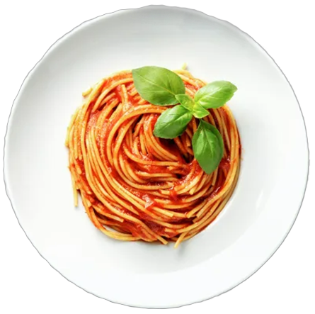

Pasta tomaat

Vegan

Lactose
Ingrediënten
|
Reviews
Busta spaghetti
Busta vegan bolognese
Geraspte mozarella
Kruiding naar keuze
Pasta Carbonara
Pasta Carbonara
Pasta Carbonara
Pasta Carbonara
Doe de Busta vegan bolognaisesaus in een ruime pot en warm de saus op tot hij lichtjes kookt. Roer af en toe in de pot om aanbranden te voorkomen.
Kruid de saus naar keuze als deze begint te koken. (Aanbevolen: spaghettimix, paprika, basilicum en look.
Voeg de pasta toe aan de kokende saus.
Laat gedurende een halve minuut doorkoken.
Serveer en geniet!